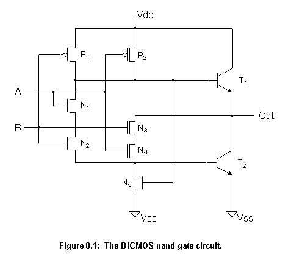
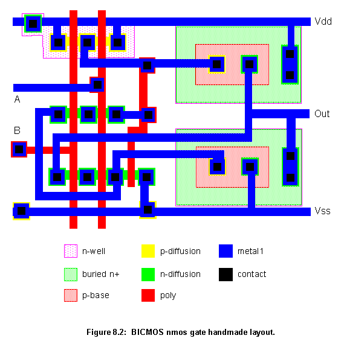
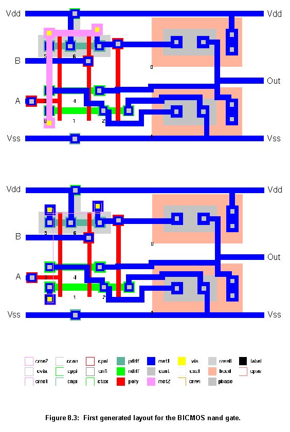
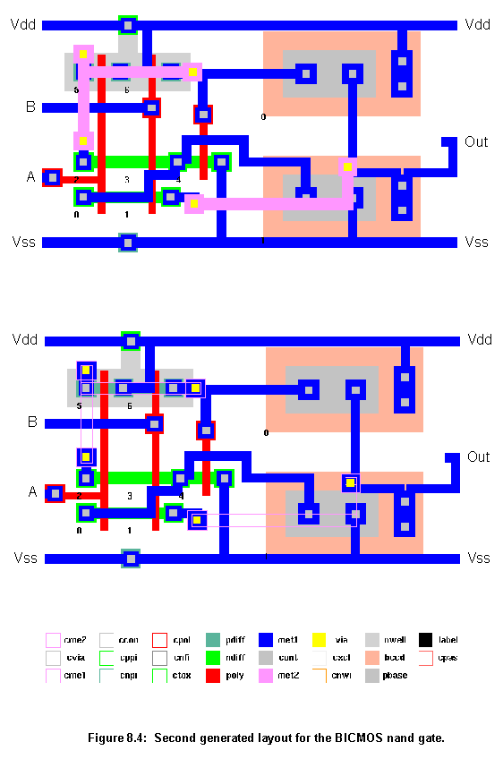
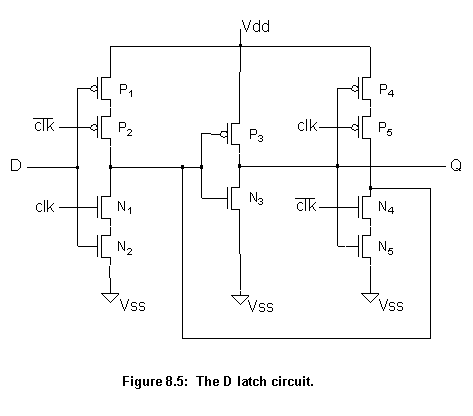
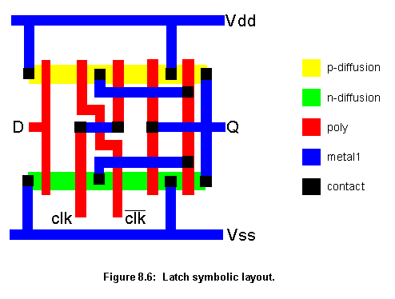
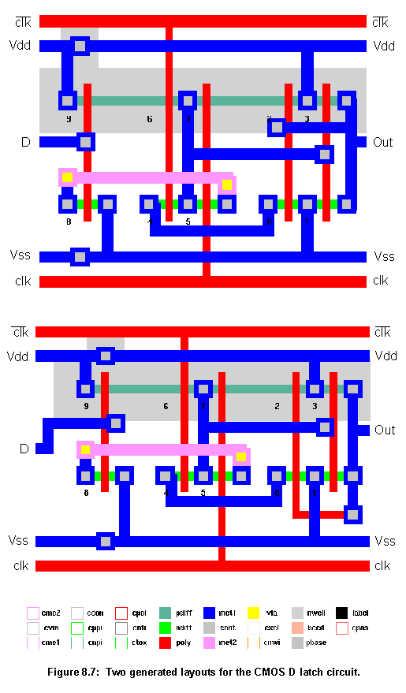
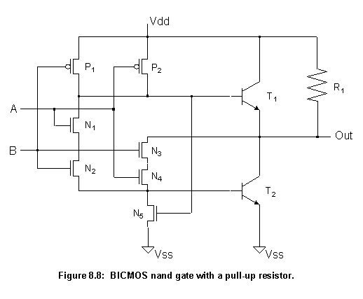
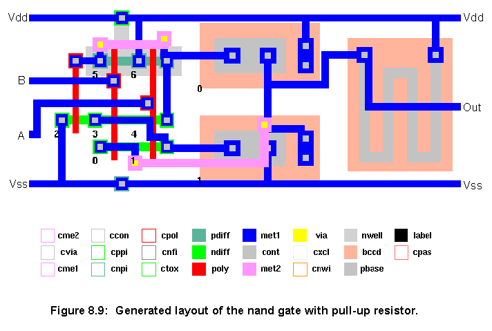
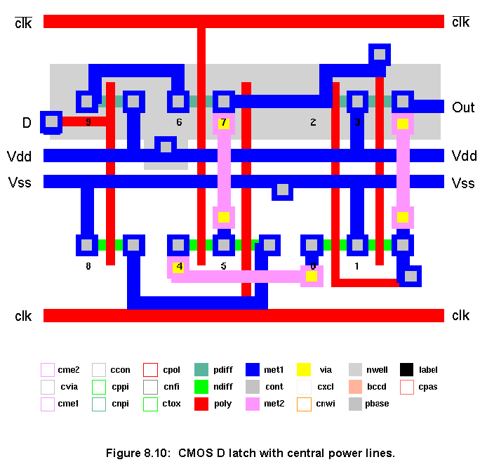

The second fabrication process is from ES2 - European Silicon Structures, it is a CMOS dual metal layer 1.5 mm process. This process does not have specific p-diff and n-diff layers. The p-diff and n-diff layers used in the circuits were formed, respectively, by the intersection of the Active Area layer with the P+ Implant layer and by the intersection of Active Area layer with N+ Implant layer. The process rules for the p-diff and n-diff layers where derived from the ones for Active Area, P+ Implant and N+ Implant layers. The conversion of layouts using the p-diff and n-diff layers back to the ES2 original layers is straightforward, p-diff and n-diff convert direct to Active Area and should be overlapped by, respectively, a layer of P+ Implant or N+ Implant. This conversion however is not yet carried out by the program.
The following examples are of two cells, the first a BICMOS two input nand gate and the second a CMOS D latch. They are used, as well, in the benchmarks to test the program scalability.


Figures 8.3 and 8.4 show two of the layouts generated for the nand gate. In the top layouts all layers are shown, in the bottom ones the metal2 layer has been made hollow to allow a better view of the other layers. As the Agents system relies on a genetic algorithm to do the placement, and this algorithm works with random changes, each time a new placement/routing of a circuit is done it may be slightly different. For this reason two circuits are shown as examples. The two generated layouts are slightly different but have a similar quality.


In these two examples (fig. 8.3 and 8.4), the two generated layouts are very similar to the one carried out manually (fig. 8.2). The generated layouts are just about 7% bigger than the manual. They have similar metal1 wire lengths to the manual layout but use extra connections in metal2. They can be generated faster than the manual one (58 seconds). This result could be improved by doing more search during the routing process or by improving the quality of the rules in the Connect agents (making them more efficient).


Figure 8.7 shows two of the layouts generated for the D latch. Again, as every time a circuit is generated by the Agents system it may be generated slightly different, two circuits were generated to show some of the possible variations between runs.

This latch layout is very interesting because it is a small but tricky layout. In the BICMOS nand gate, the generated layouts were very similar to the handmade one, in the D latch case they are different. The handmade symbolic layout (fig. 8.6) was implemented in just two strips of diffusion (one pdiff and one ndiff), but the generated ones (fig. 8.7) both needed four strips of diffusion (one pdiff and three ndiff).
The trick is the crossing of the clock signals, shown in the symbolic layout (fig. 8.6). The rules in the Abutted agents can not detect this kind of transistor alignment during the column formation process. Unable to do the same kind of crossing, the generated layouts had to use more strips of diffusion making their solution more complicated and around 15% bigger than the manual one. Nevertheless, the generated layouts are still of a reasonably good quality.
Adding rules specifically to detect this kind of transistor alignment in the Abutted agents, should solve this problem.
| PC | One workstation | Three workstations | Eight workstations | ||
|---|---|---|---|---|---|
| BICMOS nand gate | first average | 4:07 0:57 | 2:12 0:40 | 1:17 0:22 | 0:58 0:20 |
| CMOS D latch | first average | 9:48 5:39 | 2:42 4:51 | 3:27 1:01 | 3:11 1:00 |
The values in table 8.1 can not be seen as precise values for the performance of the program in the various computer configurations. Precise execution time is dependent on what tasks other users were doing on the networked machines, at the same time as this benchmark was running, and on the traffic load on the network. Nevertheless, if the network is not having any other big changes in its workload during the test, the results can reasonably reflect the program scalability (making use of the extra computing power available to it).
As one can see from table 8.1, the Agent system is able to run faster as the computing resources available to it increase. The PC times mainly show that the program can run on such a configuration. Scalability begins to show from one to three workstations, when there is a big increase in performance (with proportional reduction in execution time) as the result of extra power available to the program. From three to eight workstations there is a more modest increase in performance, this can be attributed to two causes: either the extra workstations (3 Sun Sparc IPC and 2 IPX) did not add that much power compared to the three already doing the work or the degree of power already used to crack these two particular cases was already near saturation point. For any parallel problem, there is an optimum number of processors to solve it, and adding more processors does not decrease execution time significantly.


The second example is the same CMOS D latch circuit, shown in figure 8.5. This example shows the Agents system capacity to tackle novel layout styles. This time, the latch was generated using a layout style, similar to the one proposed in [74], where the power lines run through the middle of the cell, in opposition to the top and bottom sides, usual in more traditional styles. Figure 8.10 shows the generated layout.

Next
Contents
Talk to me